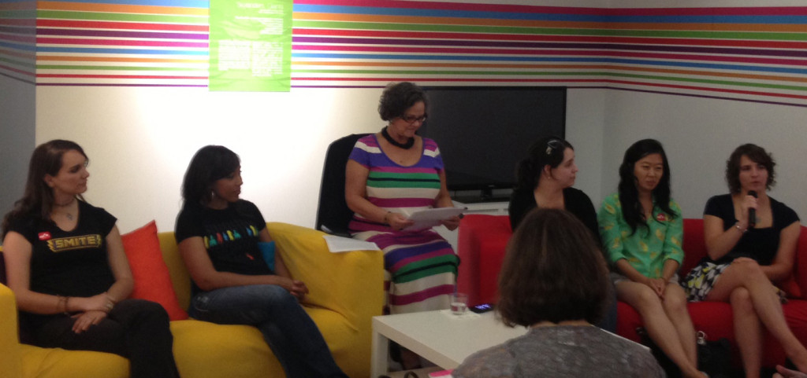
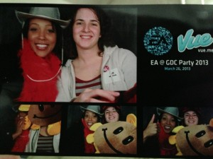
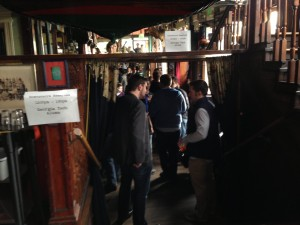
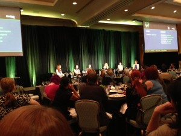
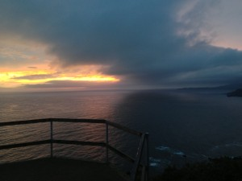
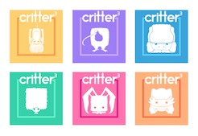

Blog
October 25, 2013
My First 2 Panels

I was thrilled to be invited to speak on my very first panel at this exhibit in July alongside several very talented local game developers! We covered subjects ranging from issues we face in starting our careers, to our favorite games. The panel really made me step out of my comfort zone and learn to speak to others about my experiences.

Afterwards I was approached with the offer to speak on another panel at SIEGE (Southern Interactive Entertainment and Game Expo) later that year. I was thrilled to do so because I felt I had a lot to say on the subject – First Days in the Industry.
One panel you’ll see at many conventions is something along the lines of “how to break in”, but rarely had I seen panels about what to do after that. I felt I had a lot to say, because I learned a lot on my journey from extremely nervous new graduate to proficient UI programmer mentoring others. My fellow panelists and I discussed via Google Hangout our topics, and at the panel covered many important lessons: “your first days will be overwhelming – that’s ok”, “don’t be afraid ask for help if you need it, but show you’ve made an attempt beforehand”, etc.
All in all, I’ve really enjoyed my entry into speaking on panels and can’t wait for my next opportunity!
April 4, 2013
GDC 2013
This year I attended my very first Game Developers Conference! I had heard some conflicting opinions on whether to go with an Expo Pass, but decided to bite the bullet and take my first flight out to California for the conference. Boy am I glad I made that choice! GDC was fantastic. California was amazing. I left knowing I will definitely be back every year I can.
So without further ado, some of my experiences:
Tuesday, March 26th


I headed over to meet with a friend Joelle for the EA party, which was fantastic. Cool themed drinks, tasty food, and a photobooth we had to check out. We later found out we even made it in their women in gaming campaign video (at 0:23 and 3:47). From there, Joelle and I walked down to the Eve Players Party where I had some interesting discussions on the game. I have never met such a passionate group of game players! After two more stops – the Blacks in Gaming mixer, and to meet up with some fellow Atlantans at the Cartoon Network party – I was worn out and jetlagged, so we headed in for the night.
Wednesday, March 27th


After lunch, we spent the rest of the afternoon exploring the Expo floor. I ran into a friend from High School who is working at Havok on their new game engine, Project Anarchy. The demo looked really neat, and needless to say I will be keeping an eye on it. After a fantastic dinner at Samovar (duck tea soup), it was time for the Women in Gaming International mixer. They held it down the street at the Comic museum. The venue was amazing (so many cool drawings), and the company was better. It was easily the first time I had seen so many women in gaming in one place. They were from all different places – I met two women from Norway and France – and of all different specialties – talked to designers and programmers, and also a game audio student. I heard a bunch of great stories, and generally felt a great sense of community.
After the party I managed to catch some of the Game Developers Choice Awards. I got to see one of my favorite games of all time, Journey, win the prize for Game of the Year!
Thursday, March 28th


The rest of the day was spent exploring GDC, having dinner with the Georgia Game Developers Association, and at night we got to go over to Riot’s party. They had a really neat setup – people playing League of Legends on stage with and overhead projector, and the dancefloor below. My group “teamed up” with some people we had met at the EA party and I got to make more friends!
Friday, March 29th – Sunday, March 31st


Saturday and Sunday were reserved for my first adventure in San Francisco. Saturday I checked out the Golden Gate, wine country and took a drive along State Road 1. Sunday was Alcatraz, Fisherman’s Wharf, and Ghiradelli. After one more trip to the sushi boats (you can’t get fish that good in Atlanta), we headed for the airport home.
Overall, my first experience with GDC and San Francisco was fantastic. Huge shout-outs to my “GDC tour guide” Joelle, who really helped make my first experience as amazing as it was and to Julian for hosting us and showing us around the city. Can’t wait for next year!!
February 1, 2013
Global Game Jam 2013: Cor Ex Machina
[video no longer available on YouTube — id MAN8Luc5emM]
I regrouped this year with some old team members from Critter3 and a couple of new faces to participate in another game jam. The theme was “heartbeat” and the game we came out with is called “Cor Ex Machina” – a herding game taking place inside of a robot’s heart. The game was developed in Unity3D by 8 developers – 3 programmers and 5 artists, all designing. We ended up taking second place for Atlanta!
This year posed some interesting new challenges. We started off with a ton of ideas, but none of them seemed to come together into a cohesive, basic mechanic that worked so well for Critter3. We finally decided we liked the idea of a ‘herding’ mechanic where you pulled blood cells along a stream with you, helping bring as many as possible as you went. The basic mechanic worked well, but we had issues making the camera, the controls, and the goal feel right. By Saturday evening we decided to scrap all but the basic coding process and start over with the idea of of a steampunk feel in mind. Our result in those final 18 hours was what you see above. The last night was tiring, but due to our amazing team we got something that came out looking awesome!
Overall it was an amazing experience. To me, Global Game Jam is like a motivation jumpstart. When working at my job and on long-term side projects it can seem like nothing is ever getting done, so when I sit down to this, it’s invigorating. Having a game go from nothing to solid playable prototype in less than 2 days is powerful. In fact, since then we have been meeting in an attempt to reboot Critter into a complete game (yay!!), but that is for another update.
Visit the Project Page to learn more.
May 20, 2011
Critter3 and Entelechy


Anyways, the main reason I took the four hour trip from Atlanta to Savannah was because one of my games – Critter3 was entered into their annual contest – Entelechy! The contest has several categories such as character design, concept art, installation art (again mostly related to art), but ours was placed into the game prototype category.
So how did I get into this SCAD contest? Critter3 was the game that I created with several others for Global Game Jam this past January. Two other Georgia Tech students and I teamed up with four Interactive Design and Game Development majors from SCAD and created the game in 48 hours (a pretty big accomplishment if I do say so myself!) We ended up liking the game so much that the SCAD students are using it as their senior post-production project. They’re sprucing up the graphics and were sprucing up the game and hoping to eventually release on mobile platforms (yay Unity!) They’re also doing some really neat advertising for the project – creating t-shirts, posters, and business cards (pictured).
Anyways, back to Entelechy. The contest placed us alongside many of the student projects from the past year, and we were finalists! The game was shown at the reception and we had a bunch of people playing it, having fun and giving us some great feedback. It was an awesome time!
Very exciting!! Soon hopefully we’ll get the rest of the world playing too!
May 17, 2011
Ice Climber Hopscotch
So a few weeks ago, for my Game Design as a Cultural Practice class, we had a “chalk games” day. For the duration, I teamed up with classmates Robert Soloman and David Dudley. The actual goal of the game was to create a chalk game based off a digital video game.
We decided to base our game off of Ice Climber, a game for the Nintendo Entertainment System. The general concept was a similar game to hopscotch, but requires two players to hold hands while moving from square to squares. Squares were arranged in increasing difficulty for the players to traverse together, and numbered from 1 – 10. Once players reach a higher numbered square, they cannot return to lower numbered ones.
The game became a really cool collaborative experience that we had a lot of fun with! Bernie DeKoven even blogged (more than once) about the class, specifically mentioning our game: “You have to love the creativity – not only of the game, but of the way in which it is played. There’s a real problem that has to be figured out, a strategy that has to be developed – what’s the best way – or any way – for us to get from place to place to place. Partner hopscotch – a concept that I’d like to see in every street and playground, wherever hopscotch is played. What a gift! ” (Hopscotch & Beyond, cont’d by Bernie DeKoven).
I really enjoyed the exercise (and the result itself) – coming up with an outdoor game like this, limited by your pieces of chalk, is really great for any game designer to play with!
| Newer | Most Recent | Older |